LaTeX 配置与安装
我在更新这个网站的时候，突然想到刚上大二的同学可能没有使用latex的经验，但是latex确确实实是近到实验报告远到读研都必须掌握的技能，甚至有学院老师直言会latex是一个较好的加分项，所以我决定写一篇latex教程，基本覆盖一些本科阶段的latex使用场景，帮助大家快速上手。
首先，latex是什么？
与我们之前就耳熟能详的Word类似，latex也是一种文档排版系统，大家或多或少都使用过Word，Word界面有各种各样的按钮、图标，点击这些按钮就可以实现不同的功能，比如说文字的加粗或者调整行间距等等，但是latex并没有这些按钮，latex排版是通过一系列命令来对文字进行操作，听上去很困难，但是实际上latex的命令是非常容易上手的，而且你需要掌握的命令的数量非常非常少，掌握这些最基本的，就足够排版出相当规范的文档。我们前面提到过latex是读研必备的技能，是因为latex对于数学公式的排版效果要远超Word，这也是这个网站的源文件格式都采用.tex的原因。
OK，那我们应该如何使用latex呢？
使用方法有两类，一类是使用在线编辑器，直接在浏览器中搜索就可以找到很多，打开然后在线编辑就能得到你想要的，但是我个人并不推荐，在线编辑器的功能不是很全面，而且必须联网使用，我个人觉得使用体验一般，另一类是使用本地编辑器，安装在自己的电脑上，离线使用，我个人非常非常推荐这种方式。
我把安装过程分为两部分，第一部分是texlive的安装，第二部分是TexStudio的安装，前者是latex的核心，后者是一个编辑器，我需要提醒的是，一定一定要先完成第一部分的安装，再进行第二部分的安装，请不要混乱顺序！！
安装texlive
首先我们要安装texlive，因为我们前面提到过latex是基于命令，也就是代码的排版系统，所以其运行需要latex环境，也就是这里的texlive，这里面包含了latex运行所需要的命令和包，也是为什么我们要先安装它。
首先我们打开https://mirrors.tuna.tsinghua.edu.cn/CTAN/systems/texlive/Images/，这是清华大学的开源软件镜像站，我们找到texlive.iso，如下图所示，单击下载，下载速度依网速而定。
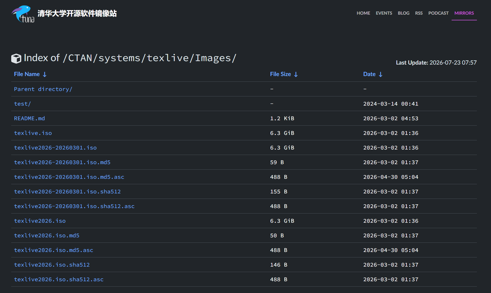
找到下载好的文件，双击它，可能会出现下面的弹窗，无需理会，点击打开
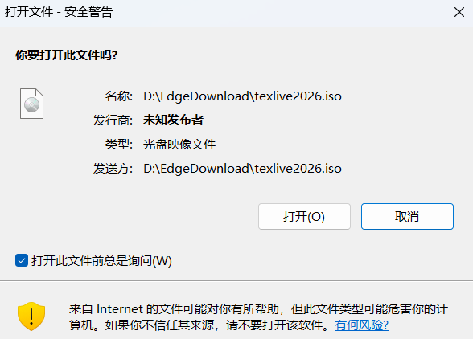
会得到下面的界面：
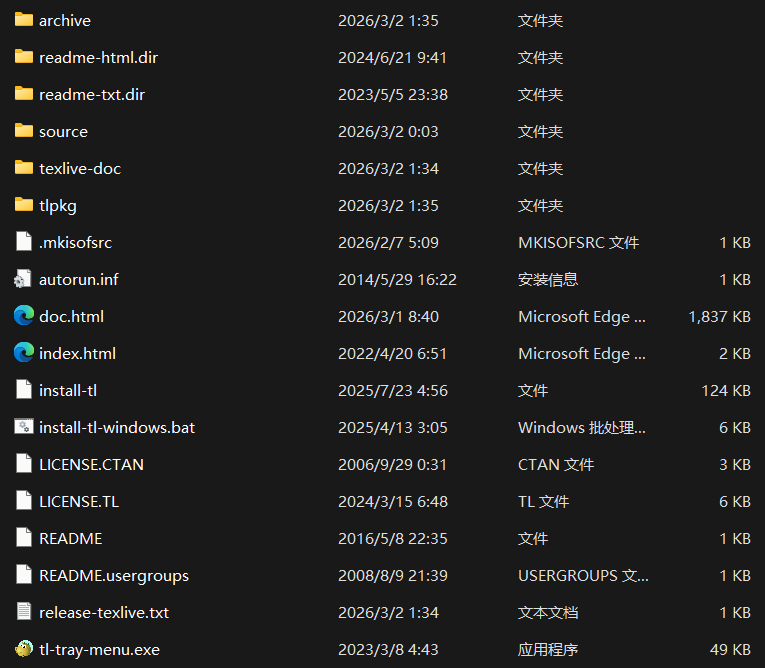
点击install-tl-windows.bat，开始安装texlive，可能会出现下面的弹窗，无需理会，点击运行
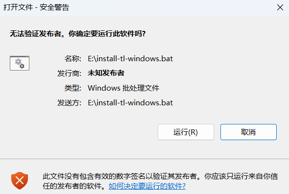
然后你能看到安装程序，先不要点击安装，如下图所示：
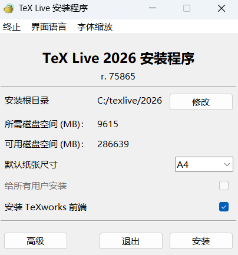
点击高级，如下图所示：
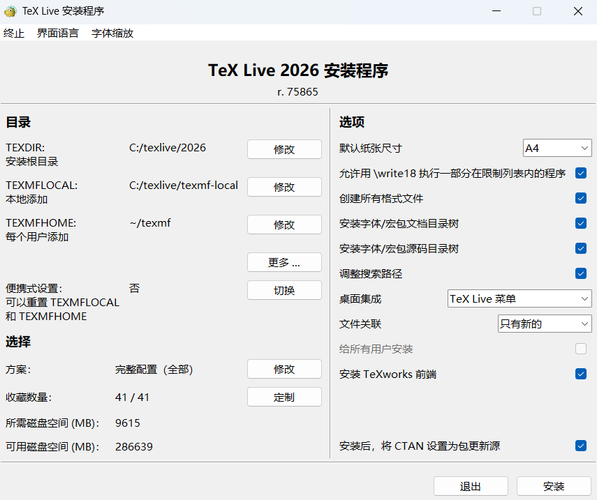
你可以在这里修改安装位置，我把它修改成了下面的样子(因为我实在是不想把它装在C盘，仅供参考)，注意安装路径不能含有中文，否则安装到一半会失败，然后点击安装。
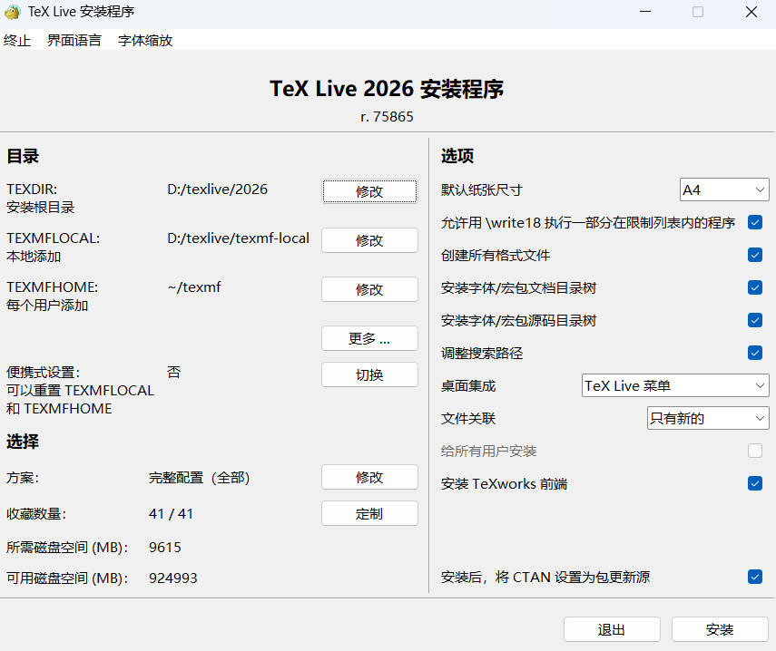
安装的界面如下图：
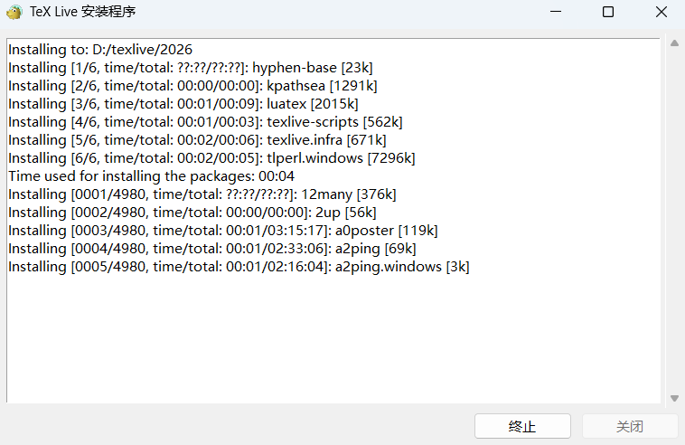
安装所需要的时间因电脑而异，请耐心等待，你会等到这样的界面，这时候不要点击终止，要继续耐心等待。
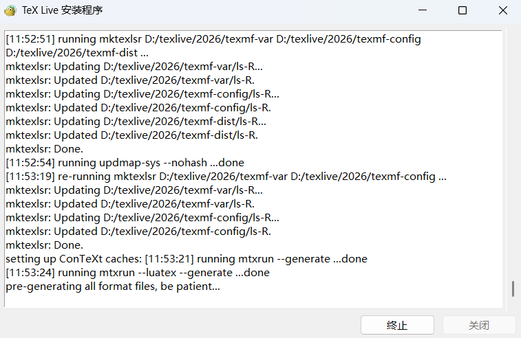
等出现下面的界面时，就意味着安装完成了
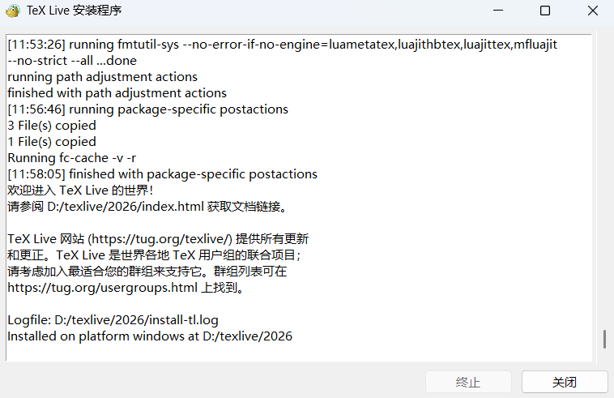
可以摁住win键+R，输入cmd，打开命令行窗口，输入latex -v，如果出现了版本号，就说明安装成功了。
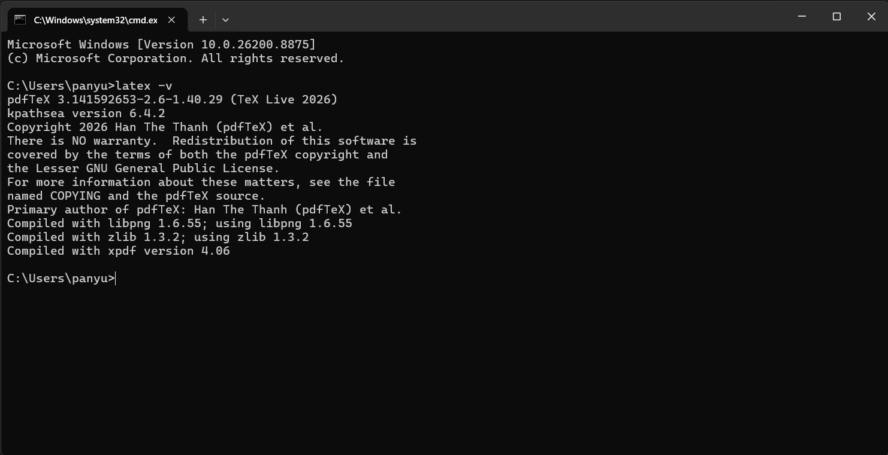
安装TexStudio
texlive只是运行latex所必要的环境，并不能来编写代码，所以我们还需要一个编辑器，我个人非常推荐TexStudio，当然也可以使用vscode(需要安装相关插件)，只是我个人觉得TexStudio功能更全面，使用体验也更好(总不能什么事情都让vscode去办吧)
首先我们打开TexStudio的官网https://texstudio.sourceforge.net/，下载你需要的版本：
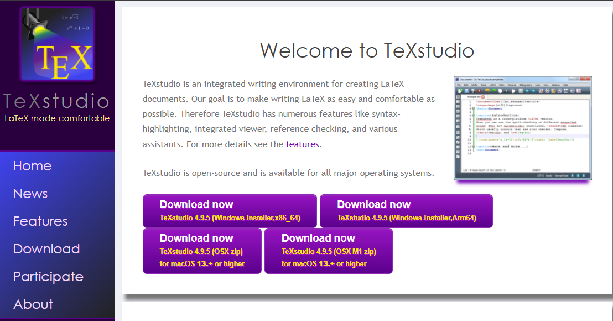
找到下载好的文件，双击它，安装过程非常简单，一直点击下一步即可(中间会让你选择安装位置，自己选择即可，我的选择如图)：
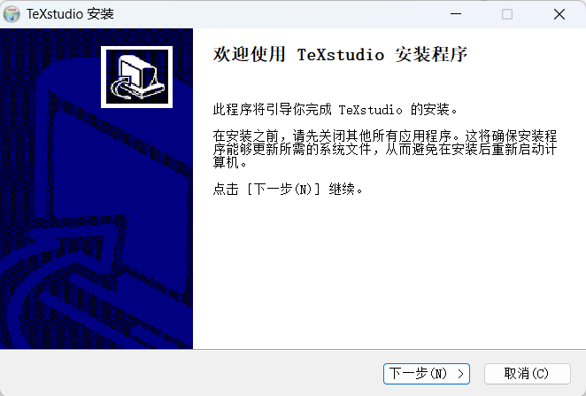
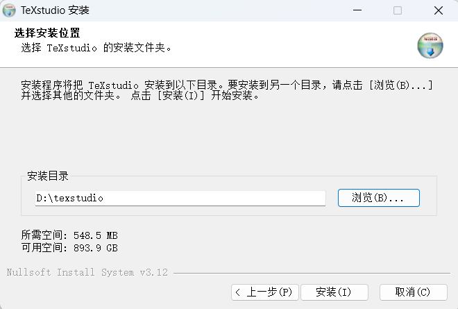
等待结束，安装完成后点开TexStudio，在导航栏点击选项-设置TexStudio，找到命令，图中的四行只要不是空白就是正常的(如果你先安装了TexStudio而后安装了texlive，这里很有可能就是空白的，那就需要手动配置了)。
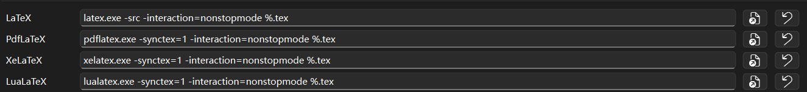